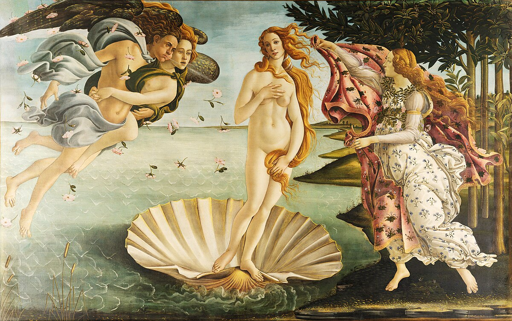

Mona Lisa od Leonarda da Vinci
Mona Lisa (1503–1506) je nejznámější portrét Leonarda da Vinciho.
Zobrazuje ženu s tajemným úsměvem, pravděpodobně Lisu Gherardini. Obraz je ceněn pro
svou kompozici, použití sfumata a psychologickou hloubku.

Stvoření Adama od Michelangela Buonarroti
Stvoření Adama (1512) je slavná freska na stropě Sixtinské kaple od
Michelangela. Zobrazuje Boha, jak dává život Adamovi dotykem prstu. Scéna je známá pro
svou dramatickou dynamiku a výraznou anatomickou přesnost.

Zrození Venuše od Sandra Botticelli
Zrození Venuše (1484–1486) je ikonické dílo Sandra Botticelliho.
Zobrazuje bohyni Venuši stojící na mušli po svém zrození z mořské pěny. Obraz je oslavou
klasické krásy a mytologie, proslulý svými jemnými liniemi a elegantní kompozicí.

Dáma s hranostahem od Leonarda da Vinci
Dáma s hranostajem (1489–1490) je portrét Cecilie Gallerani, milenky
Ludovica Sforzy, od Leonarda da Vinciho. Hranostaj symbolizuje čistotu a odkazuje na
vévodu, člena Řádu hranostaje. Obraz vyniká detailností a technikou sfumato, která
vytváří iluzi trojrozměrnosti.